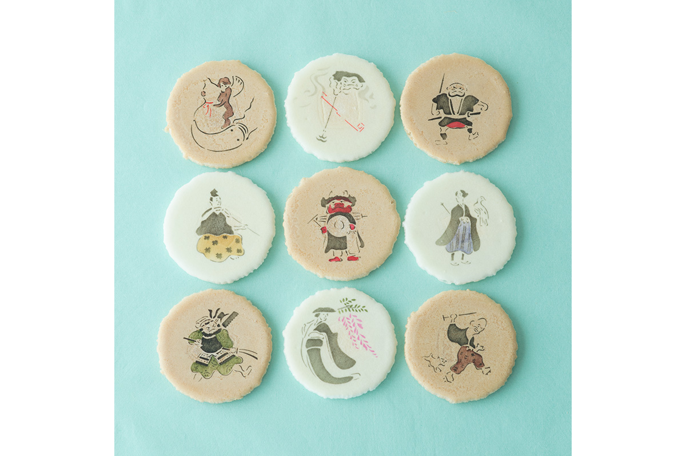
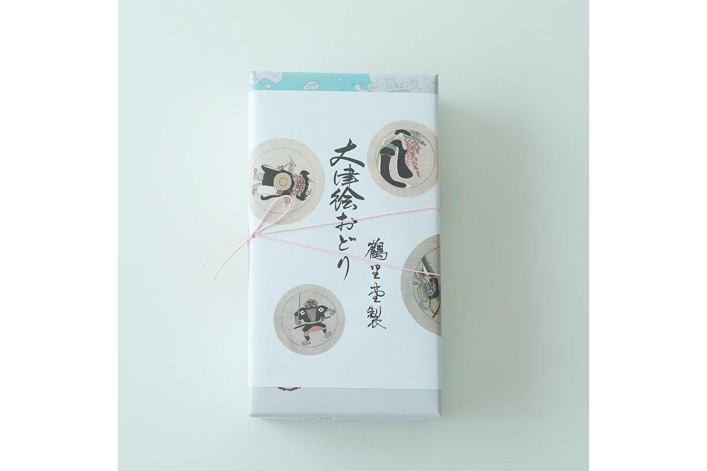
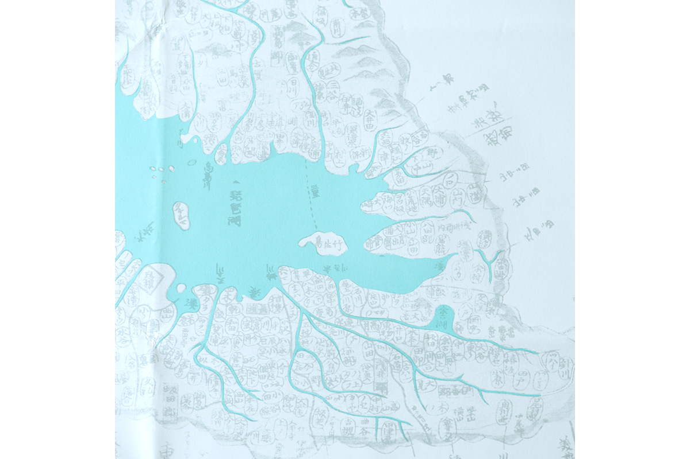
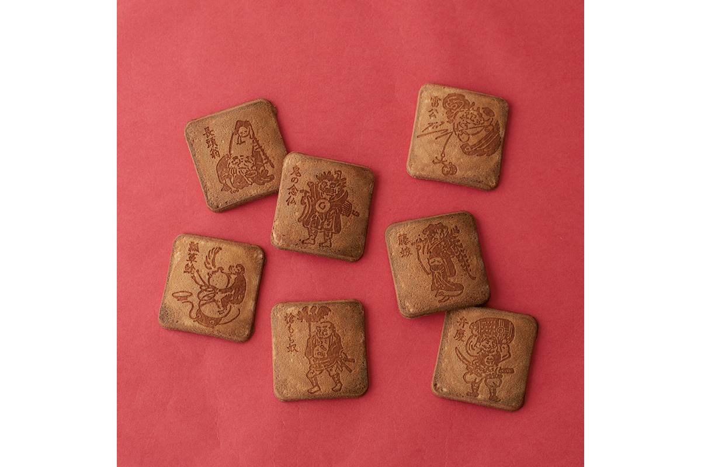
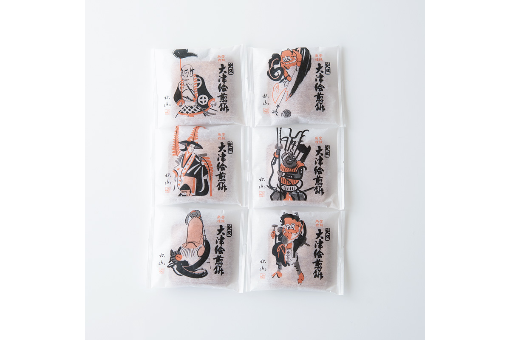
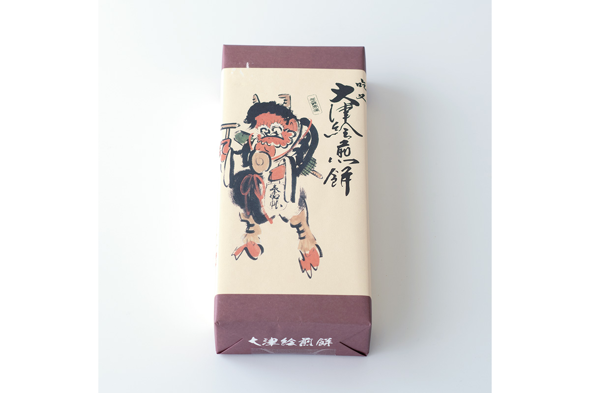
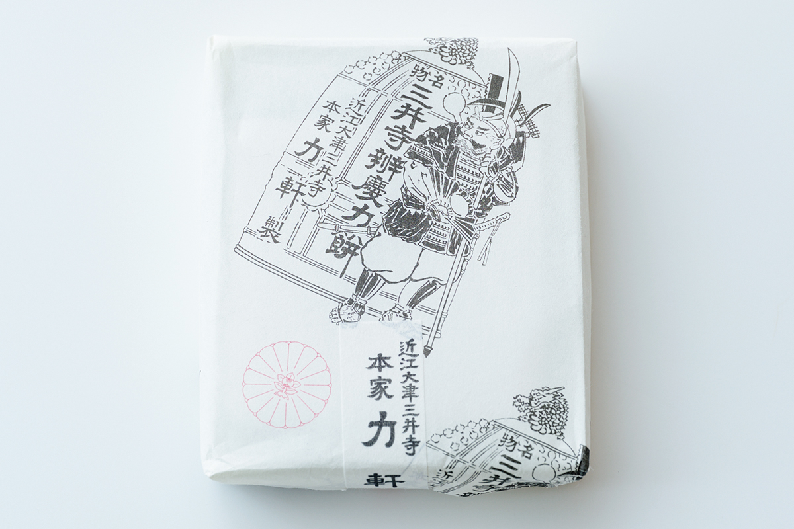
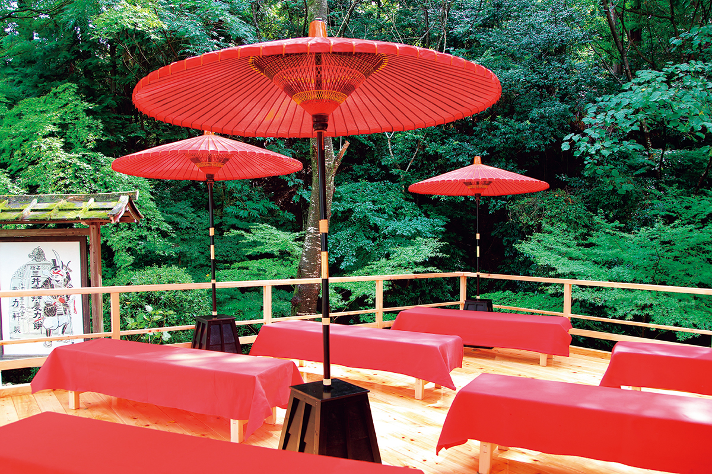

Префектура Сига · Оцу · сладости
Сладости Оцу: народные картинки «оцу-э» на сэмбэй и рисовые лепёшки силача Бэнкэя

Оцу, город на южном берегу озера Бива, подарил Японии оцу-э, весёлые народные картинки, которые веками увозили домой путники. Местные кондитеры до сих пор переносят эти сюжеты на сладости, и по ним можно устроить маленькое путешествие.
Оцу-э
Картинки с большой дороги
Оцу-э это народная живопись, родившаяся в Оцу, у старой заставы Осака-но сэки (с городом Осака её не связывает ничего, кроме созвучия), где проходил тракт Токайдо из Эдо в Киото. С начала эпохи Эдо, то есть с XVII века, путники покупали эти картинки как сувенир и как оберег. Рисовали их быстро и просто, и для оберегов они выглядят на удивление смешливо: бог грома ловит упавший барабан, сом пытается удержаться на тыкве-горлянке, демон в монашеской рясе бредёт с гонгом.
В своих книгах Мунэёси Янаги писал, что оцу-э «скорее ремесло, чем изобразительное искусство», и очень высоко их ценил. Неудивительно, что кондитеры Оцу так охотно берут эти сюжеты для своих сладостей: у каждого есть доброе значение, и каждый легко узнать. Исследовательница японских сладостей, много лет ищущая лакомства, связанные с народным ремеслом, отобрала три таких угощения, и все три можно купить только здесь.
Какуридо
«Оцу-э одори»: картинки в сахарной глазури
Кондитерская «Какуридо» делает «Оцу-э одори», тонкие хрустящие сэмбэй «фуяки». Рисунок наносят цветной сахарной глазурью, и она повторяет даже краски настоящих оцу-э. Из множества сюжетов здесь выбрали десять классических, их так и называют: «десять тем оцу-э».
У каждой картинки своё доброе пожелание. Демон, читающий молитву, унимает ночной плач детей и прогоняет злых духов, а Бэнкэй с колоколом обещает крепкое здоровье и большие деньги. Сэмбэй ломаются с лёгким хрустом, и рука сама тянется за следующим.


«Какуридо»
- Адрес
- префектура Сига, Оцу, Кёмати, 1-2-18
- Телефон
- +81 77-523-2662
- Часы работы
- 9:00–18:00
- Выходные
- воскресенье
- Сайт
- kakurido.com
Дайтюдо
Сэмбэй «Оцу-э»: рисунок раскалённым клеймом
Интерес к оцу-э в Японии не угасает. Осенью 2020 года в Токио, в галерее при станции Токио, прошла большая выставка оцу-э. На её афише был демон и надпись, повторённая трижды: «Хочу! Хочу! Хочу!». Рядом мелким шрифтом перечислялись прежние владельцы картины, известные коллекционеры, последним из которых был сам Мунэёси Янаги.

Собирать подлинные оцу-э, как знаменитые знатоки, необязательно. Для начала можно просто взять к чаю сэмбэй «Оцу-э» из кондитерской «Дайтюдо», которая работает в Оцу с 1932 года. На каждое печенье клеймом выжигают классический сюжет. Тесто самое простое: сахар, пшеничная мука и яйца. Получается хрустящее яичное печенье с насыщенным, спокойным и домашним вкусом.


«Дайтюдо», главный магазин
- Адрес
- префектура Сига, Оцу, Каннондзи, 8-17
- Телефон
- +81 77-522-3204
- Часы работы
- 9:00–18:00
- Выходные
- воскресенье, праздничные дни
- Сайт
- daichudo.com
Миидэра
«Бэнкэй тикара-моти» у храмового колокола
Среди сюжетов оцу-э особенно любили воинов. Самые известные картинки посвящены Бэнкэю: «Бэнкэй с колоколом» и «Бэнкэй с алебардой».
По легенде, Бэнкэй унёс колокол из храма Миидэра (официально Ондзёдзи), а потом вернул его. «Бэнкэй с алебардой» изображает его последний бой, в котором он, как рассказывают, погиб стоя.

Если ехать в Оцу ради народного искусства, без храма Миидэра не обойтись. Это знаменитый храм, связанный с Бэнкэем, и его документы внесены в реестр ЮНЕСКО «Память мира». На территории храма по пути к залу Каннон стоит лавка «Хонкэ Тикаракэн», которая давно продаёт лепёшки в честь богатырской силы Бэнкэя. При ней есть чайный домик, где можно передохнуть.
Пробовать «Бэнкэй тикара-моти» нужно обязательно. Свежие мягкие лепёшки гюхи обсыпают кинако, жареной соевой мукой, смешанной с чаем маття и тонким сахаром васамбон. Кинако пахнет поджаренным, лепёшка скользкая и нежная, и усталость от дороги быстро проходит. Сладость не хранится, поэтому через интернет её не продают: попробовать можно только на месте.

«Хонкэ Тикаракэн»
- Адрес
- префектура Сига, Оцу, Ондзёдзи-тё, 246
- Телефон
- +81 77-524-0797
- Часы работы
- 10:00–16:30
- Выходные
- среда
- Цены / Вход
- 5 лепёшек 600 иен
- Сайт
- tikaraken.com
Фото: Вакана Баба.